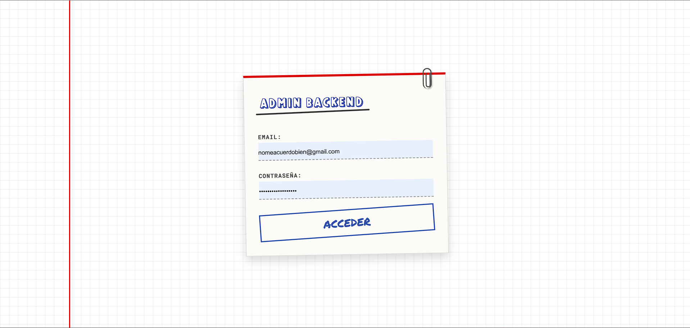
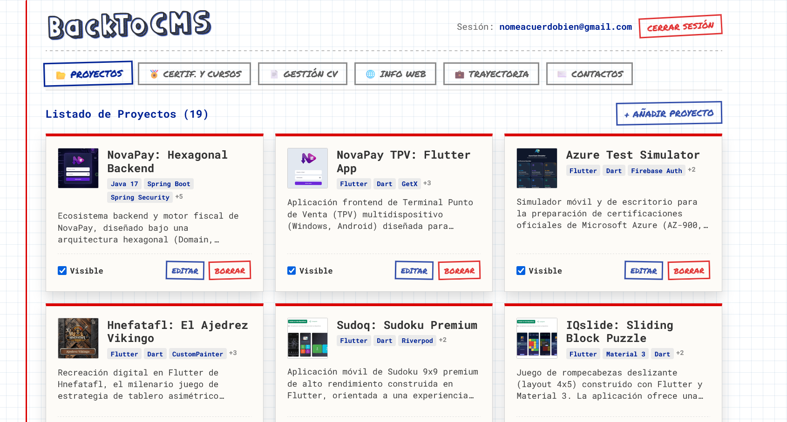
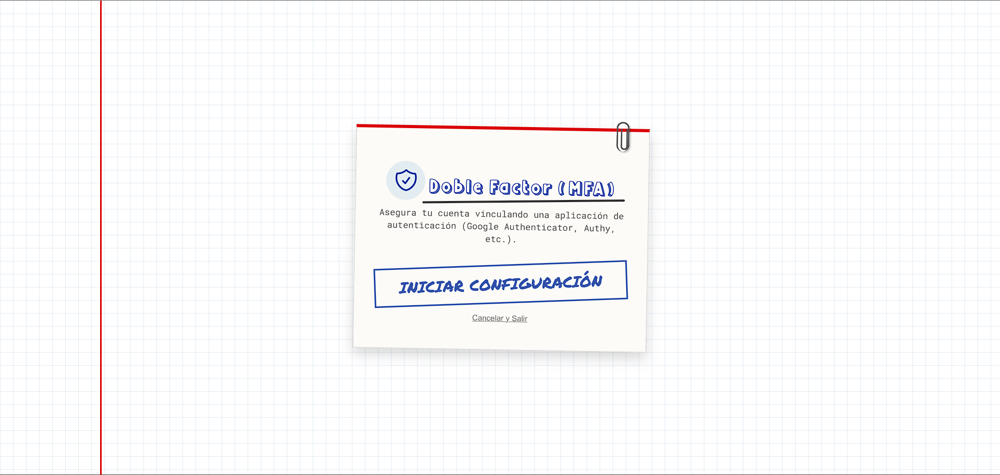
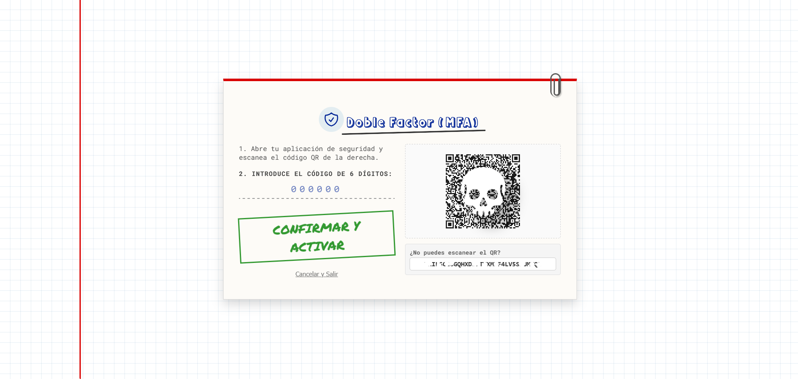
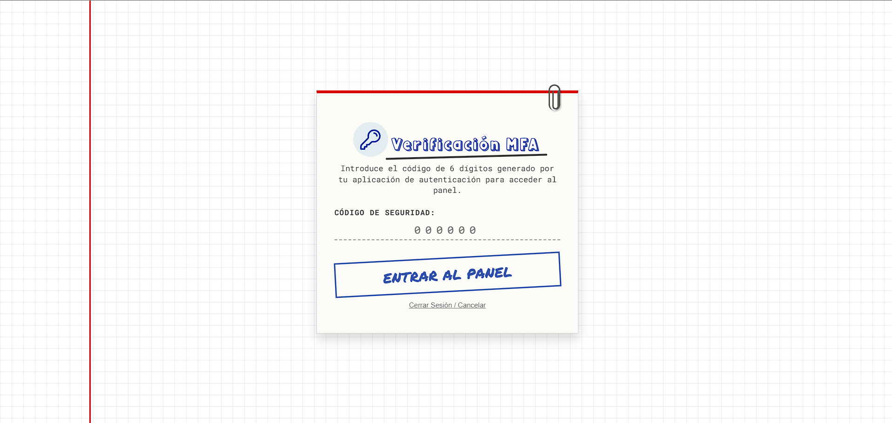
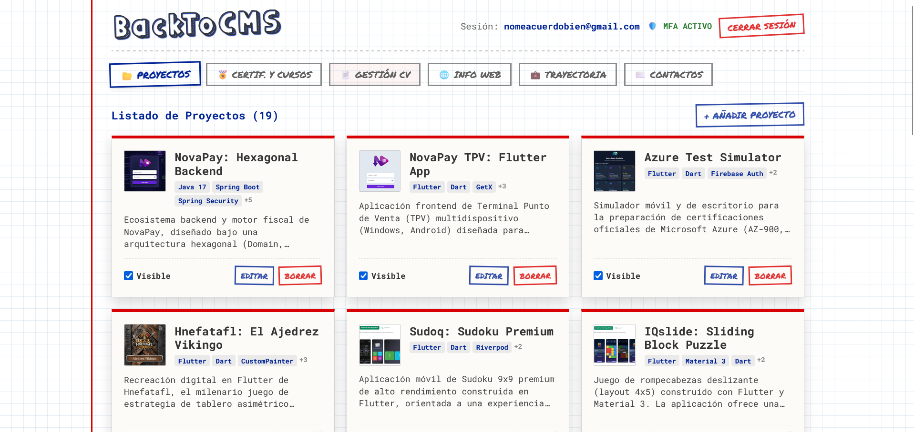

Política de Contraseñas y Doble Factor (MFA)
Implementación y documentación del proceso de robustecimiento del portal mediante políticas estrictas de complejidad de credenciales y autenticación multifactor (MFA/TOTP) utilizando el backend gestionado de Supabase Auth.
Arquitectura de Control de Acceso (MFA - TOTP)
La transición de AAL1 (Autenticación de un solo factor) a AAL2 (Autenticación multifactor) es una de las defensas más robustas en la gestión de identidades y accesos (IAM). Protege al portfolio contra ataques de credenciales comprometidas. El flujo implementado consta de dos etapas críticas:
Fase A: Registro y Enrolamiento
El usuario, una vez autenticado en AAL1, inicia la activación. El sistema realiza una llamada a supabase.auth.mfa.enroll({ factorType: 'totp' }), devolviendo un secreto criptográfico y un código QR en formato SVG. Tras escanear el QR en la aplicación autenticadora (ej. Microsoft Authenticator), el usuario envía el primer token de 6 dígitos que se valida en el servidor mediante challenge() y verify(), marcando el factor como activo.
Fase B: Interceptación en Login
Al iniciar sesión con email y contraseña, el usuario obtiene una sesión AAL1. El frontend evalúa el estado del nivel de aseguramiento asíncronamente con supabase.auth.mfa.getAuthenticatorAssuranceLevel(). Si la cuenta posee MFA habilitado (nextLevel === 'aal2'), el sistema oculta el panel principal de administración y exige el código TOTP para elevar la sesión a AAL2.
Endurecimiento de Seguridad (Políticas RLS en Base de Datos)
Para neutralizar la posibilidad de que un atacante evada las restricciones de seguridad del frontend (bypass de cliente), se ha implementado un control estricto a nivel de base de datos en PostgreSQL mediante Row Level Security (RLS).
Se han modificado las políticas en la base de datos para exigir que el JSON Web Token (JWT) enviado por el cliente contenga el parámetro aal con valor estrictamente igual a 'aal2' para cualquier consulta de administración sensible o de modificación de datos:
-- 1. Forzar nivel AAL2 (MFA) para interactuar con la tabla de proyectos
CREATE POLICY "Administrador gestiona proyectos"
ON public.projects FOR ALL TO authenticated
USING ((select auth.jwt() ->> 'aal') = 'aal2')
WITH CHECK ((select auth.jwt() ->> 'aal') = 'aal2');
-- 2. Restringir la subida de archivos al Bucket de almacenamiento del portfolio
CREATE POLICY "Administrador sube archivos en porfolio"
ON storage.objects FOR INSERT TO authenticated
WITH CHECK (bucket_id = 'porfolio' AND (select auth.jwt() ->> 'aal') = 'aal2');
-- 3. Acceso de lectura y borrado de mensajes de contacto únicamente con AAL2
CREATE POLICY "Administrador gestiona contactos"
ON public.contacts FOR ALL TO authenticated
USING ((select auth.jwt() ->> 'aal') = 'aal2');Registro de Incidencias Resueltas durante la Integración
Durante el proceso de desarrollo y despliegue del doble factor y la robustez de credenciales en el porfolio, se identificaron y subsanaron los siguientes fallos técnicos:
Causa raíz: El compilador de TypeScript fallaba al intentar recuperar la propiedad factorType sobre los factores de autenticación devueltos por listFactors(), dado que el servidor GoTrue de Supabase utiliza la nomenclatura nativa de base de datos (snake_case) para los objetos de retorno.
Solución aplicada: Se reconfiguró el acceso a la propiedad modificándola por factor.factor_type, resolviendo de forma efectiva el bloqueo del tipado estricto.
Causa raíz: El panel cargaba fugazmente datos privados y elementos de la interfaz en lo que tardaba la consulta asíncrona a Supabase en validar la sesión, debido a que el estado de verificación se inicializaba por defecto en false.
Solución aplicada: Se programó una máquina de estados estricta (checking | verified | pending_verification | no_mfa). El renderizado del dashboard y las peticiones a la base de datos permanecen bloqueados y en espera a menos que el estado sea estrictamente verified.
Causa raíz: En lugar de renderizarse la imagen del código QR, la pantalla mostraba la cadena de texto plano de la URI data:image/svg+xml;utf-8,... ya que el SDK de Supabase entrega el SVG codificado en una Data URL.
Solución aplicada: Se diseñó un validador condicional: si el string comienza por data:, se renderiza mediante una etiqueta estándar <img src={qrCode} />, asegurando compatibilidad en cualquier navegador.
Causa raíz: La inclinación aleatoria y rotaciones físicas (`transform: rotate(1deg)`) aplicadas a las tarjetas de estilo "libreta" del porfolio impedían la lectura del código QR con las cámaras de los teléfonos móviles.
Solución aplicada: Se inyectaron reglas CSS para anular la rotación (`transform: none`) exclusivamente en el contenedor de MFA. Además, se dividió el formulario en dos columnas y se incluyó la clave en texto plano con selección rápida al toque (`user-select: all`) como alternativa de accesibilidad.
Simulador Interactivo de Login y Desafío MFA
Prueba el simulador interactivo para comprobar cómo la lógica del frontend valida las contraseñas complejas y gestiona la redirección asíncrona hacia el código de doble factor.
Credencial del Portfolio
Introduce un correo y crea una contraseña para validar los requisitos de robustez exigidos.
Registro del MFA en tu Dispositivo
Escanea el código QR con tu aplicación autenticadora.
JBSWY3DPEHPK3PXP
Ingresa el token generado 123456 para simular la verificación.
¡Doble Factor Activado con Éxito!
Tu nivel de aseguramiento de sesión ha escalado a aal2. Supabase ha registrado el dispositivo autenticador. Las peticiones a la base de datos que requieren MFA ahora son autorizadas.
Panel de Evidencias del Despliegue
A continuación se presenta la secuencia visual del laboratorio dividida en dos niveles de seguridad. Las dos primeras capturas ilustran el estado inicial de **Seguridad Estándar (antes)**, donde el acceso se limita únicamente a la validación de credenciales con complejidad obligatoria de contraseñas. Las siguientes capturas demuestran el flujo de **Seguridad Premium (después)**, donde se integra el enrolamiento y la interceptación por doble factor de autenticación (MFA/TOTP) exigiendo el nivel de aseguramiento AAL2.
Pantalla de Login Básico (Email y Contraseña)
Seguridad Estándar (AAL1)
Interfaz inicial de acceso al portfolio donde el administrador introduce sus credenciales de acceso básicas. En este momento, el nivel de aseguramiento de sesión concedido es aal1.
Panel Backend Original (Acceso Directo Sin MFA)
Seguridad Estándar (AAL1)
Panel de administración del portfolio al que se accedía directamente tras superar el login básico en el flujo original sin MFA (nivel de seguridad AAL1), previo al robustecimiento de seguridad.
Inicio de Configuración de MFA en el Perfil de Usuario
Seguridad Premium (AAL2 Enforced)
Sección de seguridad dentro del panel del usuario en la sesión AAL1, configurada para iniciar la vinculación del segundo factor TOTP llamando a las APIs de enrolamiento.
Escaneo de Código QR de Verificación y Activación
Seguridad Premium (AAL2 Enforced)
Generación del código QR y secreto Base32 devueltos por el GoTrue de Supabase Auth para enlazar con Microsoft Authenticator y campo para validar el primer token. * Nota: Por seguridad se ha borrado de esta página el código manual de enrolamiento y el QR se ha cubierto parcialmente con una marca de calavera; el factor está desactivado, pero nunca se está suficientemente seguro. *
Desafío de Doble Factor en Login (MFA Challenge)
Seguridad Premium (AAL2 Enforced)
Pantalla intermedia que intercepta al administrador tras el login de primer factor al detectar que el MFA está activo (nextLevel === 'aal2'), exigiendo el código de 6 dígitos antes de desbloquear el panel.
Gestión de Portfolio con Nivel de Sesión AAL2
Seguridad Premium (AAL2 Enforced)
Consola interna del administrador operativa con la sesión ascendida a AAL2, permitiendo realizar operaciones de escritura y cargas al Storage cumpliendo las políticas RLS.